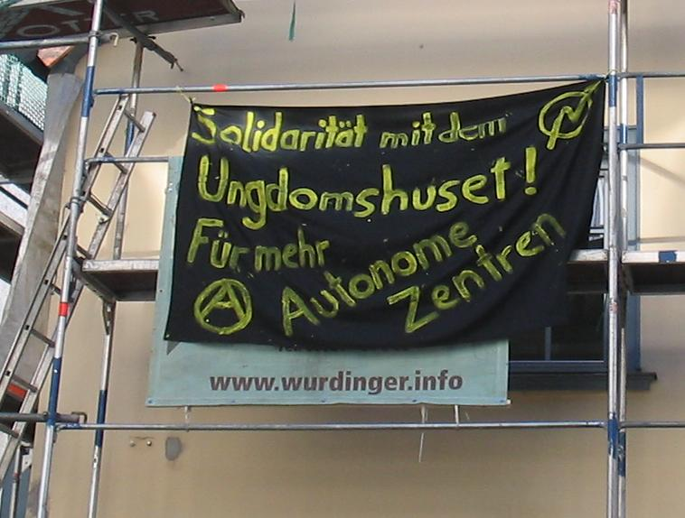

So, ein weiteres aufregendes Jahr in Aschaffenburgs linker Politikszene liegt hinter uns und der Jahresrückblick steht an. Trotz der üblichen Ups & Downs blicken wir positiv zurück und nehmen wichtige Erfahrungen mit in die kommenden Aufgaben – und 2008 wird heiß, nicht nur wegen der anstehenden „Move your Town“-Kampagne des
Abakuz e.V.. „Geschichte wird gemacht – es geht voran!“ – und das hoffentlich mit tatkräftiger Unterstützung von euch Allen. Viel Spaß beim zurückblicken.
Januar:
Anfang Januar wird offenbar der, bei Neonazis beliebte Tattoo-Shop in Mömlingen mit Farbe verschönert. Bereits im August 2006 wurden in Mömlingen Flyer verteilt, die über den rechtsradikalen Hintergrund des Studios aufklärten. Im Verlauf des Jahre wird man noch Einiges aus Mömlingen zu hören kriegen.
Im Aschaffenburger Stadtgebiet tauchen Flyer des “Widerstand Aschaffenburg” auf, welche sich in bester Bild-Manier und “anwaltlich geprüft” über Steuerverschwendung auslassen.
Der Verein Abakuz und der libertäre Stammtisch setzen ihre Vortragsreihe mit folgenden Veranstaltungen fort: “Anarchafeminismus – Infos und Diskussion” (inklusive großem Artikel im Main Echo) und
“Bolivien – Vortrag zur aktuellen politischen Situation” (Pressemitteilung).
Februar:
Das Jahr beginnt dann auch gleich mit 2 Großveranstaltungen, zum Einen der Demo gegen den Opernball in Frankfurt, zum Anderen die Demo anlässlich der NATO Sicherheitskonferenz in München. In der Vortragsreihe steht ein Doppel-Termin mit einem Vertreter der Gruppe Schwarze Katze an: “Anarchismus und Anti-Atom” sowie “Tips und Tricks für den anarchistischen Alltag”
März:
auszeit-news setzt auf zeitgemäße Technik und bekommt ein neues Design spendiert. Seit März besuchten über 6000 Menschen, in stetig ansteigender Zahl, unsere Website – sehr motivierend!
In Kopenhagen wir das Jugendzentrum „Ungdomshuset“ geräumt. Neben zahlreichen Aktionen und Demonstrationen in aller Welt wurde auch Solidarität in Form eines Transparentes in der Herstallstraße in Aschaffenburg gezeigt. Und am 20.03.2007 besuchen etwa 25 Personen einen Vortrag im Café Schwarzer Riese zum Thema “Kommunistischer Anarchismus nach Peter Kropotkin” mit den netten Leuten von der Anarchistischen Förderation Berlin.

April:
In Frankfurt demonstrieren über 1000 Menschen gegen Überwachungsstaat und Herrschaft. Eine der großen Demos, die vom „Arbeitskreis Vorratsdatenspeicherung“ im Jahr 2007 organisiert wurden. Leider wird der Gesetzesentwurf zur Vorratsdatenspeicherung dennoch verabschiedet, die Auswirkungen werden wir ab 2008 zu spüren bekommen.
Am 21.04.2007 erscheint im Main-Echo ein Artikel mit der Überschrift “Sind Neonazis in Alzenau aktiv?”. Inhaltlich geht es vorrangig um die “Heimattreue Deutsche Jugend” (HDJ), welche in Alzenau einen organisatorischen Stützpunkt unterhält. Die Informationen dazu stammen aus einer Pressemitteilung des „Bündnis gegen Rechts Aschaffenburg“ und des „apabiz“ aus Berlin. Infolge dessen gründet sich in Alzenau ein Zusammenschluss von Leuten, die gegen Neonazis aktiv werden wollen.
Der Mömlinger Bürgermeister entzieht zur gleichen Zeit einem Infostand über Neonazis die Genehmigung aufgrund von Sicherheitsbedenken, das Bündnis „Odenwald gegen Rechts“ meldet darauf hin einen kompletten Informationstag an.
Danach ein kleiner Abschied – die vorerst letzte Veranstaltung der libertären Vortragsreihe steht an. Rudolf Mühland von der FAU Düsseldorf referiert über „Anarchistische Strömungen und Utopien“.
Bildungstechnisch ging es Ende April natürlich trotzdem weiter:
„Der Gifpel der Repression“ – so lautet der Titel einer Veranstaltung der Antirepressions-Infotour der Roten Hilfe, welche potentielle ProtestteilnehmerInnen schonmal auf das Muskelspiel des Staats zum G8-Gipfel einstimmt.
Mai:
Am 1. Mai laufen Nazis in Rüsselsheim und Raunheim. Durch ein massives Polizeiaufgebot konnte der Aufmarsch leider nicht verhindert werden.
Am 9. Mai hat das BKA dem hohen Fahndungsdruck entsprochen und bundesweit 40 Objekte durchsucht. 900 Polizeikräfte wurden eingesetzt, um Privatpersonen und linke Projekte einzuschüchtern. Ermittelt wird nach §129a.
In der Nacht vom 10. auf den 11.5.2007 kommt es daraufhin in Aschaffenburg zu einer Aktion (mit Farbe) gegen die Commerzbank wegen des Verkaufs der Köpi (besetztes Haus in Berlin) und der Repression gegen G8-KritikerInnen. Der anstehende Gipfel wirft seine Schatten voraus.
Irgendwann um diese Zeit gründete sich auch der NPD Kreisverband Main-Spessart.
Juni:
Der „Tag gegen Rechts“ in Mömlingen findet statt, getragen vom OgR, verschiedenen Parteien und Gewerkschaften.
In Aschaffenburg gibts kurz vorm Gipfel noch einen kritischen G8 Infostand.
Weiterhin 2 Vorträge zum Thema Rechtsextremismus, in Aschaffenburg bezogen auf die NPD und den bevorstehenden Naziaufmarsch in Frankfurt; in Mömlingen mit dem Schwerpunkt „Neonazistischer Lifestyle“.
Dann natürlich das Event des Jahres, der G8 Gipfel in Heiligendamm bei Rostock, steht an und bekommt auch Besuch aus Aschaffenburg.
Der 30.06. war kein guter Tag für die Neonazis in Unterfranken. Die unterfränkische Bezirksverbandsversammlung in Schweinfurt kann die NPD nicht ohne Proteste von etwa 50 Antifas durchführen.
Doch nicht genug: vier Antifa-Gruppen der Antifa-Koordination Unterfranken outen unter dem Motto “Vier gewinnt!” am selben Morgen fünf fränkische Neonazis.

Juli:
In Frankfurt laufen, von einem riesigen Polizeiaufgebot (~8000) geschützt, 600 Neonazis durch den Stadteil Hausen. Trotzdem gibt es massiven Protest und einige gelungene Aktionen.
Immer wieder Mömlingen: Nach verschiedenen Info-Veranstaltungen über die Mömlinger Neonazi-Szene kommt es offenbar zu einer militanten Aktion gegen den Tattoo-Shop “Low-Life-Rebel”. Laut einer Meldung auf der eigenen Website wurden die Schaufensterscheiben entglast. Marco Träger, Ladenbesitzer, setzt ein Kopfgeld auf die Täter aus. Soweit von offizieller Seite bekannt, sind die aber einfach nicht aufzufinden.
August:
Auf dem Kommz wieder der alljährliche Büchertisch von Abakuz und dem Alibri-Verlag dazu ein riesig-gelbes Anti-Nazi Transparent.
Repression: Aufgrund der Zunahme antifaschistischer Aktivitäten in Mömlingen versucht der Aschaffenburger Staatsschutz, namentlich durch Herrn Reis, engagierte Menschen einzuschüchtern bzw. für eigene Zwecke einzuspannen. In einem Aschaffenburger Laden wird ein Plakat, das zu Protesten gegen den Naziaufmarsch in Frankfurt aufruft, beschlagnahmt und der Ladeninhaber zur Zahlung einer Geldstrafe gezwungen.
September:
Kein Monat der schönen Nachrichten: Die Band „Damage Inc.“ aus Aschaffenburg veröffentlicht eine CD und spielt bei einem Konzert zum Gedenken an den Blood&Honour-Gründer Ian Stuart in Belgien vor 500 Neonazis.
Die Kameradschaft Miltenberg tritt mit einer eigenen Website ans Licht der Öffentlichkeit, nachdem sie durch einen Zufall schon in allen möglichen Online-Medien erwähnt wurde.
Oktober:
In Aschaffenburg wird der monatliche Antifa-Kneipenabend ins Leben gerufen.
Weitere gute Nachricht: die GEW warnt in einem Rundschreiben vor der Hexe Ragna alias Sigrid Schüssler, nicht zuletzt aufgrund der „Vier gewinnt!“– Outingaktion.
Nachdem bekannt wird, dass die Bundeswehr mit ihrem KarriereTreff auch Aschaffenburg besuchen würde, organisiert das Aschaffenburger Friedenskomitee und die Anarchistische Gruppe eine Kundgebung, um öffentlich klar zu stellen, dass SoldatInnen und ihre Propaganda in dieser Stadt unerwünscht sind. An der Kundgebung beteiligen sich etwa 60 Personen, anschließend gibt es noch eine kurze Spontandemo direkt zur Bundeswehr.

November:
Marco Träger, der Inhaber des Tattoo-Shops “Low-Life-Rebel” in Mömlingen, bedroht die Bewohner einer WG in Höchst/Odw und fordert für eingeworfene Schaufensterscheiben 8000€ bis zum kommenden Freitag, “ansonsten werden andere Seiten aufgezogen”. Die Leute zeigen ihn darauf hin bei der zuständigen Behörde an, was ihm auch gleich eine Hausdurchsuchung beschert.
Dezember:
Etwas verspätet folgt der inhaltliche Nachschub zur Kundgebung gegen die Bundeswehr, ein Vortrag zum Thema „Zivilmacht im Krieg?“ im Café Schwarzer Riese.
Das Bayernweit erste »Mobiles Interventionsteam gegen Rechtsextremismus« (MIT) für die Landkreise Aschaffenburg und Main-Spessart wird gegründet. Das Team setzt sich zusammen aus den Kreisjugendring-Vorsitzenden, sowie Kreisjungendpfleger und 2 Experten für Rechtsextremismus aus München.
In Darmstadt gab es noch eine Demo gegen Studiengebühren, leider beteiligten sich nur etwa 600 Leute daran.